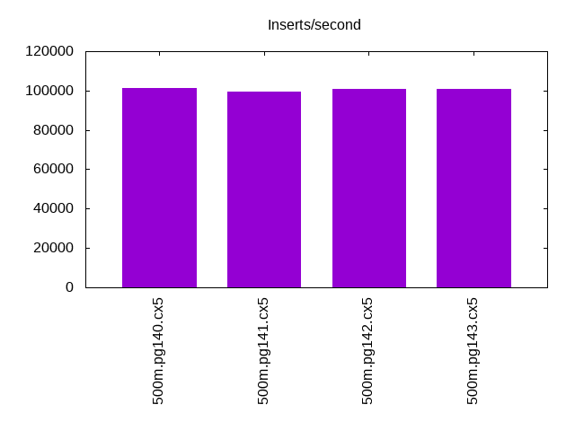
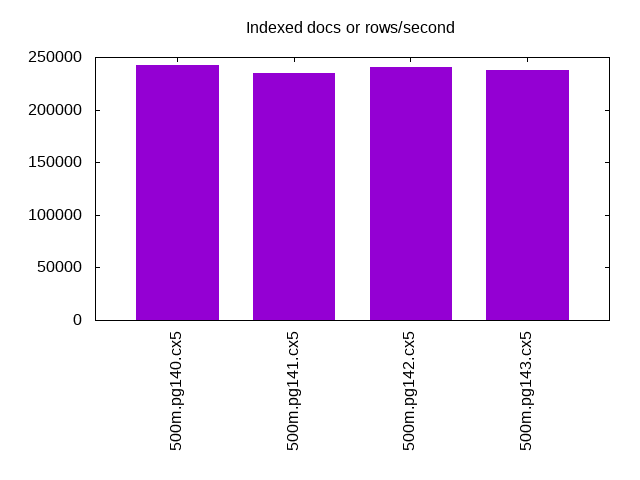
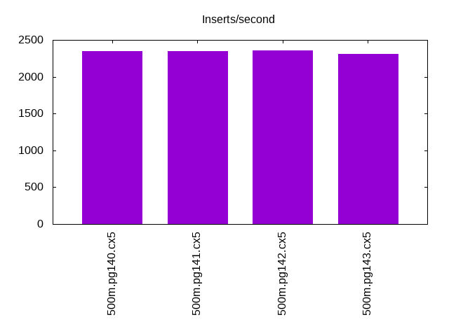
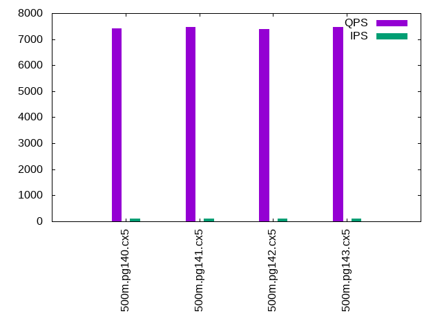
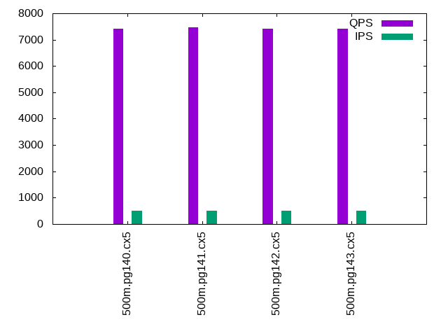
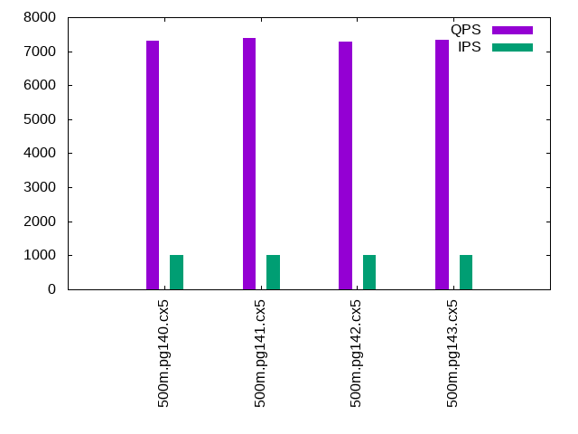

This is a report for the insert benchmark with 500M docs and 1 client(s). It is generated by scripts (bash, awk, sed) and Tufte might not be impressed. An overview of the insert benchmark is here and a short update is here. Below, by DBMS, I mean DBMS+version.config. An example is my8020.c10b40 where my means MySQL, 8020 is version 8.0.20 and c10b40 is the name for the configuration file.
The test server is an Intel NUC with 4 cores, 16G RAM and a Samsung 970 EVO. More details are here. Clients and the DBMS share one server. The per-database configs are in the per-database subdirectories here.
The tested DBMS are:
The numbers are inserts/s for l.i0 and l.i1, indexed docs (or rows) /s for l.x and queries/s for q*.2. The values are the average rate over the entire test for inserts (IPS) and queries (QPS). The range of values for IPS and QPS is split into 3 parts: bottom 25%, middle 50%, top 25%. Values in the bottom 25% have a red background, values in the top 25% have a green background and values in the middle have no color. A gray background is used for values that can be ignored because the DBMS did not sustain the target insert rate. Red backgrounds are not used when the minimum value is within 80% of the max value.
| dbms | l.i0 | l.x | l.i1 | q100.1 | q500.1 | q1000.1 |
|---|---|---|---|---|---|---|
| 500m.pg140.cx5 | 101112 | 242062 | 2351 | 7417 | 7404 | 7301 |
| 500m.pg141.cx5 | 99641 | 234789 | 2344 | 7477 | 7466 | 7382 |
| 500m.pg142.cx5 | 100888 | 240433 | 2358 | 7380 | 7410 | 7291 |
| 500m.pg143.cx5 | 100867 | 237239 | 2308 | 7465 | 7425 | 7342 |
This lists the average rate of inserts/s for the tests that do inserts concurrent with queries. For such tests the query rate is listed in the table above. The read+write tests are setup so that the insert rate should match the target rate every second. Cells that are not at least 95% of the target have a red background to indicate a failure to satisfy the target.
| dbms | q100.1 | q500.1 | q1000.1 |
|---|---|---|---|
| pg140.cx5 | 100 | 500 | 999 |
| pg141.cx5 | 100 | 500 | 999 |
| pg142.cx5 | 100 | 499 | 999 |
| pg143.cx5 | 100 | 500 | 999 |
| target | 100 | 500 | 1000 |
l.i0: load without secondary indexes. Graphs for performance per 1-second interval are here.
Average throughput:
Insert response time histogram: each cell has the percentage of responses that take <= the time in the header and max is the max response time in seconds. For the max column values in the top 25% of the range have a red background and in the bottom 25% of the range have a green background. The red background is not used when the min value is within 80% of the max value.
| dbms | 256us | 1ms | 4ms | 16ms | 64ms | 256ms | 1s | 4s | 16s | gt | max |
|---|---|---|---|---|---|---|---|---|---|---|---|
| pg140.cx5 | 85.981 | 14.016 | 0.002 | 0.001 | nonzero | 0.209 | |||||
| pg141.cx5 | 74.540 | 25.456 | 0.003 | 0.001 | nonzero | 0.160 | |||||
| pg142.cx5 | 83.726 | 16.271 | 0.002 | 0.001 | nonzero | 0.233 | |||||
| pg143.cx5 | 83.055 | 16.941 | 0.003 | 0.001 | nonzero | 0.239 |
Performance metrics for the DBMS listed above. Some are normalized by throughput, others are not. Legend for results is here.
ips qps rps rmbps wps wmbps rpq rkbpq wpi wkbpi csps cpups cspq cpupq dbgb1 dbgb2 rss maxop p50 p99 tag 101112 0 41 0.3 145.0 47.3 0.000 0.003 0.001 0.479 12138 43.0 0.120 17 47.8 62.9 0.0 0.209 101489 95695 500m.pg140.cx5 99641 0 40 0.3 142.2 46.8 0.000 0.003 0.001 0.481 11969 44.3 0.120 18 47.8 63.9 0.0 0.160 100026 93936 500m.pg141.cx5 100888 0 41 0.3 144.6 47.2 0.000 0.003 0.001 0.479 12106 43.1 0.120 17 47.8 63.0 0.0 0.233 101288 96328 500m.pg142.cx5 100867 0 37 0.4 139.1 46.5 0.000 0.004 0.001 0.472 12091 43.2 0.120 17 47.8 63.5 5.4 0.239 101289 95298 500m.pg143.cx5
l.x: create secondary indexes.
Average throughput:
Performance metrics for the DBMS listed above. Some are normalized by throughput, others are not. Legend for results is here.
ips qps rps rmbps wps wmbps rpq rkbpq wpi wkbpi csps cpups cspq cpupq dbgb1 dbgb2 rss maxop p50 p99 tag 242062 0 593 73.4 197.1 75.8 0.002 0.311 0.001 0.321 540 23.1 0.002 4 91.9 108.2 0.0 0.003 NA NA 500m.pg140.cx5 234789 0 576 71.5 189.4 73.3 0.002 0.312 0.001 0.320 528 23.0 0.002 4 91.9 109.3 0.0 0.003 NA NA 500m.pg141.cx5 240433 0 589 72.9 195.4 75.1 0.002 0.310 0.001 0.320 540 23.1 0.002 4 91.9 108.3 0.0 0.004 NA NA 500m.pg142.cx5 237239 0 579 72.0 203.0 78.2 0.002 0.311 0.001 0.338 602 22.9 0.003 4 91.9 110.4 0.0 0.003 NA NA 500m.pg143.cx5
l.i1: continue load after secondary indexes created. Graphs for performance per 1-second interval are here.
Average throughput:
Insert response time histogram: each cell has the percentage of responses that take <= the time in the header and max is the max response time in seconds. For the max column values in the top 25% of the range have a red background and in the bottom 25% of the range have a green background. The red background is not used when the min value is within 80% of the max value.
| dbms | 256us | 1ms | 4ms | 16ms | 64ms | 256ms | 1s | 4s | 16s | gt | max |
|---|---|---|---|---|---|---|---|---|---|---|---|
| pg140.cx5 | 23.378 | 76.550 | 0.072 | 0.001 | 0.354 | ||||||
| pg141.cx5 | 21.577 | 78.333 | 0.089 | 0.003 | 0.385 | ||||||
| pg142.cx5 | 23.186 | 76.711 | 0.103 | 0.001 | 0.380 | ||||||
| pg143.cx5 | 21.258 | 78.626 | 0.114 | 0.002 | 0.377 |
Performance metrics for the DBMS listed above. Some are normalized by throughput, others are not. Legend for results is here.
ips qps rps rmbps wps wmbps rpq rkbpq wpi wkbpi csps cpups cspq cpupq dbgb1 dbgb2 rss maxop p50 p99 tag 2351 0 3159 25.3 4001.3 63.3 1.344 11.014 1.702 27.560 7281 20.8 3.097 354 93.6 112.8 0.0 0.354 2349 1298 500m.pg140.cx5 2344 0 3156 25.3 3990.5 62.9 1.346 11.037 1.702 27.471 7246 20.7 3.091 353 93.6 112.3 0.0 0.385 2347 1348 500m.pg141.cx5 2358 0 3168 25.4 4013.7 63.4 1.344 11.015 1.702 27.532 7278 20.8 3.087 353 93.6 112.5 0.0 0.380 2349 1298 500m.pg142.cx5 2308 0 3113 24.9 3947.4 64.9 1.349 11.057 1.710 28.794 7175 20.8 3.109 361 93.6 113.2 0.0 0.377 2347 1298 500m.pg143.cx5
q100.1: range queries with 100 insert/s per client. Graphs for performance per 1-second interval are here.
Average throughput:
Query response time histogram: each cell has the percentage of responses that take <= the time in the header and max is the max response time in seconds. For max values in the top 25% of the range have a red background and in the bottom 25% of the range have a green background. The red background is not used when the min value is within 80% of the max value.
| dbms | 256us | 1ms | 4ms | 16ms | 64ms | 256ms | 1s | 4s | 16s | gt | max |
|---|---|---|---|---|---|---|---|---|---|---|---|
| pg140.cx5 | 99.802 | 0.194 | 0.003 | nonzero | nonzero | 0.044 | |||||
| pg141.cx5 | 99.795 | 0.201 | 0.003 | 0.001 | nonzero | nonzero | nonzero | 0.322 | |||
| pg142.cx5 | 99.793 | 0.204 | 0.003 | nonzero | nonzero | 0.052 | |||||
| pg143.cx5 | 99.825 | 0.172 | 0.003 | nonzero | nonzero | 0.046 |
Insert response time histogram: each cell has the percentage of responses that take <= the time in the header and max is the max response time in seconds. For max values in the top 25% of the range have a red background and in the bottom 25% of the range have a green background. The red background is not used when the min value is within 80% of the max value.
| dbms | 256us | 1ms | 4ms | 16ms | 64ms | 256ms | 1s | 4s | 16s | gt | max |
|---|---|---|---|---|---|---|---|---|---|---|---|
| pg140.cx5 | 96.472 | 3.521 | 0.007 | 0.192 | |||||||
| pg141.cx5 | 96.847 | 3.132 | 0.014 | 0.007 | 0.433 | ||||||
| pg142.cx5 | 96.208 | 3.792 | 0.031 | ||||||||
| pg143.cx5 | 96.861 | 3.132 | 0.007 | 0.095 |
Performance metrics for the DBMS listed above. Some are normalized by throughput, others are not. Legend for results is here.
ips qps rps rmbps wps wmbps rpq rkbpq wpi wkbpi csps cpups cspq cpupq dbgb1 dbgb2 rss maxop p50 p99 tag 100 7417 136 1.1 318.0 4.6 0.018 0.151 3.183 47.351 28801 26.2 3.883 141 93.7 98.9 0.0 0.044 7448 6217 500m.pg140.cx5 100 7477 136 1.1 320.0 4.6 0.018 0.150 3.204 47.605 29025 26.3 3.882 141 93.7 98.5 0.0 0.322 7512 6057 500m.pg141.cx5 100 7380 136 1.1 317.9 4.6 0.018 0.152 3.185 47.319 28657 26.3 3.883 143 93.7 99.1 0.0 0.052 7401 6425 500m.pg142.cx5 100 7465 137 1.1 335.7 4.8 0.018 0.151 3.360 48.811 28979 26.3 3.882 141 93.7 98.5 0.0 0.046 7496 6297 500m.pg143.cx5
q500.1: range queries with 500 insert/s per client. Graphs for performance per 1-second interval are here.
Average throughput:
Query response time histogram: each cell has the percentage of responses that take <= the time in the header and max is the max response time in seconds. For max values in the top 25% of the range have a red background and in the bottom 25% of the range have a green background. The red background is not used when the min value is within 80% of the max value.
| dbms | 256us | 1ms | 4ms | 16ms | 64ms | 256ms | 1s | 4s | 16s | gt | max |
|---|---|---|---|---|---|---|---|---|---|---|---|
| pg140.cx5 | 99.862 | 0.136 | 0.002 | nonzero | 0.007 | ||||||
| pg141.cx5 | 99.862 | 0.136 | 0.002 | nonzero | 0.005 | ||||||
| pg142.cx5 | 99.858 | 0.140 | 0.002 | nonzero | 0.007 | ||||||
| pg143.cx5 | 99.861 | 0.137 | 0.002 | nonzero | 0.005 |
Insert response time histogram: each cell has the percentage of responses that take <= the time in the header and max is the max response time in seconds. For max values in the top 25% of the range have a red background and in the bottom 25% of the range have a green background. The red background is not used when the min value is within 80% of the max value.
| dbms | 256us | 1ms | 4ms | 16ms | 64ms | 256ms | 1s | 4s | 16s | gt | max |
|---|---|---|---|---|---|---|---|---|---|---|---|
| pg140.cx5 | 90.769 | 9.226 | 0.004 | 0.088 | |||||||
| pg141.cx5 | 90.275 | 9.719 | 0.006 | 0.080 | |||||||
| pg142.cx5 | 90.883 | 9.111 | 0.004 | 0.001 | 0.311 | ||||||
| pg143.cx5 | 89.878 | 10.114 | 0.008 | 0.113 |
Performance metrics for the DBMS listed above. Some are normalized by throughput, others are not. Legend for results is here.
ips qps rps rmbps wps wmbps rpq rkbpq wpi wkbpi csps cpups cspq cpupq dbgb1 dbgb2 rss maxop p50 p99 tag 500 7404 658 5.2 1020.2 17.9 0.089 0.723 2.043 36.667 29888 27.2 4.037 147 94.6 99.7 0.0 0.007 7400 7256 500m.pg140.cx5 500 7466 658 5.2 1018.6 17.8 0.088 0.717 2.039 36.483 30112 27.2 4.034 146 94.6 99.7 0.0 0.005 7464 7320 500m.pg141.cx5 499 7410 658 5.2 1021.2 17.9 0.089 0.723 2.045 36.763 29919 27.1 4.038 146 94.6 99.7 0.0 0.007 7416 7258 500m.pg142.cx5 500 7425 658 5.2 1018.5 17.8 0.089 0.721 2.039 36.461 29974 27.4 4.037 148 94.6 99.7 0.0 0.005 7432 7272 500m.pg143.cx5
q1000.1: range queries with 1000 insert/s per client. Graphs for performance per 1-second interval are here.
Average throughput:
Query response time histogram: each cell has the percentage of responses that take <= the time in the header and max is the max response time in seconds. For max values in the top 25% of the range have a red background and in the bottom 25% of the range have a green background. The red background is not used when the min value is within 80% of the max value.
| dbms | 256us | 1ms | 4ms | 16ms | 64ms | 256ms | 1s | 4s | 16s | gt | max |
|---|---|---|---|---|---|---|---|---|---|---|---|
| pg140.cx5 | 99.731 | 0.266 | 0.003 | nonzero | nonzero | 0.059 | |||||
| pg141.cx5 | 99.730 | 0.266 | 0.003 | nonzero | 0.008 | ||||||
| pg142.cx5 | 99.719 | 0.278 | 0.003 | nonzero | nonzero | 0.017 | |||||
| pg143.cx5 | 99.716 | 0.281 | 0.003 | nonzero | 0.007 |
Insert response time histogram: each cell has the percentage of responses that take <= the time in the header and max is the max response time in seconds. For max values in the top 25% of the range have a red background and in the bottom 25% of the range have a green background. The red background is not used when the min value is within 80% of the max value.
| dbms | 256us | 1ms | 4ms | 16ms | 64ms | 256ms | 1s | 4s | 16s | gt | max |
|---|---|---|---|---|---|---|---|---|---|---|---|
| pg140.cx5 | 83.374 | 16.601 | 0.024 | 0.002 | 0.458 | ||||||
| pg141.cx5 | 83.106 | 16.863 | 0.030 | 0.001 | 0.316 | ||||||
| pg142.cx5 | 83.401 | 16.581 | 0.017 | 0.083 | |||||||
| pg143.cx5 | 83.035 | 16.935 | 0.027 | 0.003 | 0.513 |
Performance metrics for the DBMS listed above. Some are normalized by throughput, others are not. Legend for results is here.
ips qps rps rmbps wps wmbps rpq rkbpq wpi wkbpi csps cpups cspq cpupq dbgb1 dbgb2 rss maxop p50 p99 tag 999 7301 1294 10.3 1737.5 31.6 0.177 1.451 1.739 32.371 30903 28.4 4.233 156 95.5 104.5 0.0 0.059 7304 7144 500m.pg140.cx5 999 7382 1294 10.3 1737.1 31.6 0.175 1.435 1.739 32.400 31206 28.3 4.227 153 95.5 104.5 0.0 0.008 7384 7224 500m.pg141.cx5 999 7291 1294 10.3 1736.8 31.6 0.178 1.454 1.738 32.347 30879 28.4 4.235 156 95.5 104.5 0.0 0.017 7288 7112 500m.pg142.cx5 999 7342 1294 10.3 1736.7 31.6 0.176 1.443 1.738 32.419 31068 28.5 4.232 155 95.5 104.5 0.0 0.007 7352 7176 500m.pg143.cx5
l.i0: load without secondary indexes
Performance metrics for all DBMS, not just the ones listed above. Some are normalized by throughput, others are not. Legend for results is here.
ips qps rps rmbps wps wmbps rpq rkbpq wpi wkbpi csps cpups cspq cpupq dbgb1 dbgb2 rss maxop p50 p99 tag 101112 0 41 0.3 145.0 47.3 0.000 0.003 0.001 0.479 12138 43.0 0.120 17 47.8 62.9 0.0 0.209 101489 95695 500m.pg140.cx5 99641 0 40 0.3 142.2 46.8 0.000 0.003 0.001 0.481 11969 44.3 0.120 18 47.8 63.9 0.0 0.160 100026 93936 500m.pg141.cx5 100888 0 41 0.3 144.6 47.2 0.000 0.003 0.001 0.479 12106 43.1 0.120 17 47.8 63.0 0.0 0.233 101288 96328 500m.pg142.cx5 100867 0 37 0.4 139.1 46.5 0.000 0.004 0.001 0.472 12091 43.2 0.120 17 47.8 63.5 5.4 0.239 101289 95298 500m.pg143.cx5
l.x: create secondary indexes
Performance metrics for all DBMS, not just the ones listed above. Some are normalized by throughput, others are not. Legend for results is here.
ips qps rps rmbps wps wmbps rpq rkbpq wpi wkbpi csps cpups cspq cpupq dbgb1 dbgb2 rss maxop p50 p99 tag 242062 0 593 73.4 197.1 75.8 0.002 0.311 0.001 0.321 540 23.1 0.002 4 91.9 108.2 0.0 0.003 NA NA 500m.pg140.cx5 234789 0 576 71.5 189.4 73.3 0.002 0.312 0.001 0.320 528 23.0 0.002 4 91.9 109.3 0.0 0.003 NA NA 500m.pg141.cx5 240433 0 589 72.9 195.4 75.1 0.002 0.310 0.001 0.320 540 23.1 0.002 4 91.9 108.3 0.0 0.004 NA NA 500m.pg142.cx5 237239 0 579 72.0 203.0 78.2 0.002 0.311 0.001 0.338 602 22.9 0.003 4 91.9 110.4 0.0 0.003 NA NA 500m.pg143.cx5
l.i1: continue load after secondary indexes created
Performance metrics for all DBMS, not just the ones listed above. Some are normalized by throughput, others are not. Legend for results is here.
ips qps rps rmbps wps wmbps rpq rkbpq wpi wkbpi csps cpups cspq cpupq dbgb1 dbgb2 rss maxop p50 p99 tag 2351 0 3159 25.3 4001.3 63.3 1.344 11.014 1.702 27.560 7281 20.8 3.097 354 93.6 112.8 0.0 0.354 2349 1298 500m.pg140.cx5 2344 0 3156 25.3 3990.5 62.9 1.346 11.037 1.702 27.471 7246 20.7 3.091 353 93.6 112.3 0.0 0.385 2347 1348 500m.pg141.cx5 2358 0 3168 25.4 4013.7 63.4 1.344 11.015 1.702 27.532 7278 20.8 3.087 353 93.6 112.5 0.0 0.380 2349 1298 500m.pg142.cx5 2308 0 3113 24.9 3947.4 64.9 1.349 11.057 1.710 28.794 7175 20.8 3.109 361 93.6 113.2 0.0 0.377 2347 1298 500m.pg143.cx5
q100.1: range queries with 100 insert/s per client
Performance metrics for all DBMS, not just the ones listed above. Some are normalized by throughput, others are not. Legend for results is here.
ips qps rps rmbps wps wmbps rpq rkbpq wpi wkbpi csps cpups cspq cpupq dbgb1 dbgb2 rss maxop p50 p99 tag 100 7417 136 1.1 318.0 4.6 0.018 0.151 3.183 47.351 28801 26.2 3.883 141 93.7 98.9 0.0 0.044 7448 6217 500m.pg140.cx5 100 7477 136 1.1 320.0 4.6 0.018 0.150 3.204 47.605 29025 26.3 3.882 141 93.7 98.5 0.0 0.322 7512 6057 500m.pg141.cx5 100 7380 136 1.1 317.9 4.6 0.018 0.152 3.185 47.319 28657 26.3 3.883 143 93.7 99.1 0.0 0.052 7401 6425 500m.pg142.cx5 100 7465 137 1.1 335.7 4.8 0.018 0.151 3.360 48.811 28979 26.3 3.882 141 93.7 98.5 0.0 0.046 7496 6297 500m.pg143.cx5
q500.1: range queries with 500 insert/s per client
Performance metrics for all DBMS, not just the ones listed above. Some are normalized by throughput, others are not. Legend for results is here.
ips qps rps rmbps wps wmbps rpq rkbpq wpi wkbpi csps cpups cspq cpupq dbgb1 dbgb2 rss maxop p50 p99 tag 500 7404 658 5.2 1020.2 17.9 0.089 0.723 2.043 36.667 29888 27.2 4.037 147 94.6 99.7 0.0 0.007 7400 7256 500m.pg140.cx5 500 7466 658 5.2 1018.6 17.8 0.088 0.717 2.039 36.483 30112 27.2 4.034 146 94.6 99.7 0.0 0.005 7464 7320 500m.pg141.cx5 499 7410 658 5.2 1021.2 17.9 0.089 0.723 2.045 36.763 29919 27.1 4.038 146 94.6 99.7 0.0 0.007 7416 7258 500m.pg142.cx5 500 7425 658 5.2 1018.5 17.8 0.089 0.721 2.039 36.461 29974 27.4 4.037 148 94.6 99.7 0.0 0.005 7432 7272 500m.pg143.cx5
q1000.1: range queries with 1000 insert/s per client
Performance metrics for all DBMS, not just the ones listed above. Some are normalized by throughput, others are not. Legend for results is here.
ips qps rps rmbps wps wmbps rpq rkbpq wpi wkbpi csps cpups cspq cpupq dbgb1 dbgb2 rss maxop p50 p99 tag 999 7301 1294 10.3 1737.5 31.6 0.177 1.451 1.739 32.371 30903 28.4 4.233 156 95.5 104.5 0.0 0.059 7304 7144 500m.pg140.cx5 999 7382 1294 10.3 1737.1 31.6 0.175 1.435 1.739 32.400 31206 28.3 4.227 153 95.5 104.5 0.0 0.008 7384 7224 500m.pg141.cx5 999 7291 1294 10.3 1736.8 31.6 0.178 1.454 1.738 32.347 30879 28.4 4.235 156 95.5 104.5 0.0 0.017 7288 7112 500m.pg142.cx5 999 7342 1294 10.3 1736.7 31.6 0.176 1.443 1.738 32.419 31068 28.5 4.232 155 95.5 104.5 0.0 0.007 7352 7176 500m.pg143.cx5
Insert response time histogram
256us 1ms 4ms 16ms 64ms 256ms 1s 4s 16s gt max tag 0.000 85.981 14.016 0.002 0.001 nonzero 0.000 0.000 0.000 0.000 0.209 pg140.cx5 0.000 74.540 25.456 0.003 0.001 nonzero 0.000 0.000 0.000 0.000 0.160 pg141.cx5 0.000 83.726 16.271 0.002 0.001 nonzero 0.000 0.000 0.000 0.000 0.233 pg142.cx5 0.000 83.055 16.941 0.003 0.001 nonzero 0.000 0.000 0.000 0.000 0.239 pg143.cx5
TODO - determine whether there is data for create index response time
Insert response time histogram
256us 1ms 4ms 16ms 64ms 256ms 1s 4s 16s gt max tag 0.000 0.000 0.000 23.378 76.550 0.072 0.001 0.000 0.000 0.000 0.354 pg140.cx5 0.000 0.000 0.000 21.577 78.333 0.089 0.003 0.000 0.000 0.000 0.385 pg141.cx5 0.000 0.000 0.000 23.186 76.711 0.103 0.001 0.000 0.000 0.000 0.380 pg142.cx5 0.000 0.000 0.000 21.258 78.626 0.114 0.002 0.000 0.000 0.000 0.377 pg143.cx5
Query response time histogram
256us 1ms 4ms 16ms 64ms 256ms 1s 4s 16s gt max tag 99.802 0.194 0.003 nonzero nonzero 0.000 0.000 0.000 0.000 0.000 0.044 pg140.cx5 99.795 0.201 0.003 0.001 nonzero nonzero nonzero 0.000 0.000 0.000 0.322 pg141.cx5 99.793 0.204 0.003 nonzero nonzero 0.000 0.000 0.000 0.000 0.000 0.052 pg142.cx5 99.825 0.172 0.003 nonzero nonzero 0.000 0.000 0.000 0.000 0.000 0.046 pg143.cx5
Insert response time histogram
256us 1ms 4ms 16ms 64ms 256ms 1s 4s 16s gt max tag 0.000 0.000 0.000 96.472 3.521 0.007 0.000 0.000 0.000 0.000 0.192 pg140.cx5 0.000 0.000 0.000 96.847 3.132 0.014 0.007 0.000 0.000 0.000 0.433 pg141.cx5 0.000 0.000 0.000 96.208 3.792 0.000 0.000 0.000 0.000 0.000 0.031 pg142.cx5 0.000 0.000 0.000 96.861 3.132 0.007 0.000 0.000 0.000 0.000 0.095 pg143.cx5
Query response time histogram
256us 1ms 4ms 16ms 64ms 256ms 1s 4s 16s gt max tag 99.862 0.136 0.002 nonzero 0.000 0.000 0.000 0.000 0.000 0.000 0.007 pg140.cx5 99.862 0.136 0.002 nonzero 0.000 0.000 0.000 0.000 0.000 0.000 0.005 pg141.cx5 99.858 0.140 0.002 nonzero 0.000 0.000 0.000 0.000 0.000 0.000 0.007 pg142.cx5 99.861 0.137 0.002 nonzero 0.000 0.000 0.000 0.000 0.000 0.000 0.005 pg143.cx5
Insert response time histogram
256us 1ms 4ms 16ms 64ms 256ms 1s 4s 16s gt max tag 0.000 0.000 0.000 90.769 9.226 0.004 0.000 0.000 0.000 0.000 0.088 pg140.cx5 0.000 0.000 0.000 90.275 9.719 0.006 0.000 0.000 0.000 0.000 0.080 pg141.cx5 0.000 0.000 0.000 90.883 9.111 0.004 0.001 0.000 0.000 0.000 0.311 pg142.cx5 0.000 0.000 0.000 89.878 10.114 0.008 0.000 0.000 0.000 0.000 0.113 pg143.cx5
Query response time histogram
256us 1ms 4ms 16ms 64ms 256ms 1s 4s 16s gt max tag 99.731 0.266 0.003 nonzero nonzero 0.000 0.000 0.000 0.000 0.000 0.059 pg140.cx5 99.730 0.266 0.003 nonzero 0.000 0.000 0.000 0.000 0.000 0.000 0.008 pg141.cx5 99.719 0.278 0.003 nonzero nonzero 0.000 0.000 0.000 0.000 0.000 0.017 pg142.cx5 99.716 0.281 0.003 nonzero 0.000 0.000 0.000 0.000 0.000 0.000 0.007 pg143.cx5
Insert response time histogram
256us 1ms 4ms 16ms 64ms 256ms 1s 4s 16s gt max tag 0.000 0.000 0.000 83.374 16.601 0.024 0.002 0.000 0.000 0.000 0.458 pg140.cx5 0.000 0.000 0.000 83.106 16.863 0.030 0.001 0.000 0.000 0.000 0.316 pg141.cx5 0.000 0.000 0.000 83.401 16.581 0.017 0.000 0.000 0.000 0.000 0.083 pg142.cx5 0.000 0.000 0.000 83.035 16.935 0.027 0.003 0.000 0.000 0.000 0.513 pg143.cx5